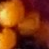
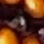
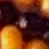
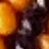
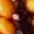

Position 4: conflict
{'black': 2, 'red': 2}. Every contributing ID remains; no majority repair.
 K-0603-1624
K-0603-1624
recorded black
XY 603.00,1624.00K-1296-1491
recorded black
XY 1298.11,1484.78R332-R-0196-0188
recorded red
XY 606.77,508.23 REC266-P054157
REC266-P054157
recorded red
XY 180.00,1127.00Position 9: conflict
{'yellow': 4, 'red': 1}. Every contributing ID remains; no majority repair.
C-1007-2744
recorded yellow
XY 1006.73,2743.85C-1180-2153
recorded yellow
XY 1179.45,2152.65 C-1580-2981
C-1580-2981
recorded yellow
XY 1579.50,2980.23C-1766-1792
recorded yellow
XY 1766.41,1792.50R332-R-0147-0142
recorded red
XY 1295.03,1529.25 Position 29: conflict
{'yellow': 4, 'red': 1}. Every contributing ID remains; no majority repair.

C-1001-2678
recorded yellow
XY 999.59,2677.69 C-1226-1539
C-1226-1539
recorded yellow
XY 1225.33,1537.67C-1250-2138
recorded yellow
XY 1249.63,2136.89 E5-1792-1727
E5-1792-1727
recorded yellow
XY 1791.80,1727.43NEW-1519-2976
recorded red
XY 1516.68,2977.03Position 35: conflict
{'yellow': 4, 'red': 1}. Every contributing ID remains; no majority repair.
C-0978-2667
recorded yellow
XY 977.81,2666.73 C-1263-2116
C-1263-2116
recorded yellow
XY 1262.38,2115.79 C-1775-1706
C-1775-1706
recorded yellow
XY 1774.80,1705.83E5-1503-2999
recorded yellow
XY 1503.08,2999.19REC266-P074746
recorded red
XY 1207.00,1553.00 Position 43: observed
{'black': 2}. Every contributing ID remains; no majority repair.
 K-0471-1609
K-0471-1609
recorded black
XY 472.27,1607.64K-1171-1518
recorded black
XY 1172.75,1518.08Position 62: observed
{'yellow': 3}. Every contributing ID remains; no majority repair.
 C-0403-1597
C-0403-1597
recorded yellow
XY 403.22,1597.26C-1116-1554
recorded yellow
XY 1115.43,1554.39C-1777-1612
recorded yellow
XY 1776.73,1611.59Position 75: observed
{'black': 2}. Every contributing ID remains; no majority repair.
K-1069-1565
recorded black
XY 1069.00,1565.50K-1740-1575
recorded black
XY 1740.00,1575.25
Position 80: conflict
{'black': 4, 'red': 1}. Every contributing ID remains; no majority repair.
K-1354-3005
recorded black
XY 1358.94,3011.35K-1410-2057
recorded black
XY 1409.86,2058.29MAT25-K-0915-2520
recorded black
XY 918.11,2520.78 NEW-1942-2725
NEW-1942-2725
recorded black
XY 1942.28,2726.21 REC266-P076585
REC266-P076585
recorded red
XY 1699.00,1594.00 Position 82: observed
{'black': 2}. Every contributing ID remains; no majority repair.

K-1037-1557
recorded black
XY 1049.50,1554.25NEW-339-1556
recorded black
XY 339.01,1554.55Position 89: observed
{'black': 3}. Every contributing ID remains; no majority repair.
 D40-K-1014-1544
D40-K-1014-1544
recorded black
XY 1017.00,1543.50 NEW-317-843
NEW-317-843
recorded black
XY 316.61,841.92NEW-326-1528
recorded black
XY 325.75,1527.19Position 101: conflict
{'yellow': 3, 'red': 1}. Every contributing ID remains; no majority repair.
 C-0272-1512
C-0272-1512
recorded yellow
XY 272.37,1512.22C-0990-1588
recorded yellow
XY 989.83,1587.63C-1677-1513
recorded yellow
XY 1676.17,1513.25 REC266-P100583
REC266-P100583
recorded red
XY 1496.00,2074.00Position 102: conflict
{'black': 3, 'red': 1}. Every contributing ID remains; no majority repair.
K-0970-1557
recorded black
XY 973.50,1557.50NEW-1681-1498
recorded red
XY 1681.78,1498.59NEW-290-1494
recorded black
XY 288.73,1494.20 NEW-343-803
NEW-343-803
recorded black
XY 342.87,803.88 Position 112: conflict
{'black': 3, 'red': 2}. Every contributing ID remains; no majority repair.
D40-K-1874-2821
recorded black
XY 1874.50,2821.50K-1506-2006
recorded black
XY 1508.67,2005.67NEW-1247-2991
recorded black
XY 1246.20,2990.47 NEW-910-2406
NEW-910-2406
recorded red
XY 910.50,2406.23REC266-P106767
recorded red
XY 2221.00,2215.00 Position 127: conflict
{'yellow': 2, 'red': 1}. Every contributing ID remains; no majority repair.
C-0900-1612
recorded yellow
XY 899.86,1612.09 C-1592-1479
C-1592-1479
recorded yellow
XY 1591.76,1478.62 R332-R-0125-0118
R332-R-0125-0118
recorded red
XY 1579.56,2038.03 Position 131: conflict
{'black': 3, 'red': 1}. Every contributing ID remains; no majority repair.
D40-K-2217-2280
recorded black
XY 2218.44,2280.61 K-1841-2884
K-1841-2884
recorded black
XY 1843.67,2884.33 NEW-2100-921
NEW-2100-921
recorded black
XY 2098.96,922.07NEW-2251-1608
recorded red
XY 2250.00,1608.14 Position 138: conflict
{'black': 4, 'red': 1}. Every contributing ID remains; no majority repair.
D40-K-1589-1970
recorded black
XY 1590.22,1971.00 K-1813-2878
K-1813-2878
recorded black
XY 1813.33,2877.50NEW-2199-2298
recorded red
XY 2197.80,2297.49 NEW-948-2311
NEW-948-2311
recorded black
XY 946.98,2311.20RF70T-K-1163-2935
recorded black
XY 1164.25,2938.25 Position 140: observed
{'black': 2}. Every contributing ID remains; no majority repair.
 K-1543-1467
K-1543-1467
recorded black
XY 1542.10,1467.10NEW-855-1626
recorded black
XY 854.91,1627.05Position 147: observed
{'black': 2}. Every contributing ID remains; no majority repair.
 K-0824-1612
K-0824-1612
recorded black
XY 823.67,1612.33K-1518-1455
recorded black
XY 1518.00,1455.00Position 154: conflict
{'black': 3, 'red': 1}. Every contributing ID remains; no majority repair.
K-0802-1592
recorded black
XY 801.44,1593.22 NEW-1493-1439
NEW-1493-1439
recorded black
XY 1492.10,1438.33NEW-199-1335
recorded black
XY 198.41,1334.76 NEW-451-650
NEW-451-650
recorded red
XY 452.81,650.28 Position 184: conflict
{'black': 4, 'red': 1}. Every contributing ID remains; no majority repair.
Position 186: observed
{'black': 2}. Every contributing ID remains; no majority repair.

D40-K-1384-1467
recorded black
XY 1387.00,1467.00 K-0693-1626
K-0693-1626
recorded black
XY 693.50,1626.00Position 190: conflict
{'black': 2, 'yellow': 2, 'red': 2}. Every contributing ID remains; no majority repair.
 D40-K-1077-2175
D40-K-1077-2175
recorded black
XY 1080.00,2175.50 E5-2139-2470
E5-2139-2470
recorded yellow
XY 2139.67,2471.33
K-1667-2990
recorded black
XY 1669.00,2983.00NEW-1036-2833
recorded yellow
XY 1036.20,2834.09NEW-1702-1860
recorded red
XY 1701.67,1861.73REC266-P054537
recorded red
XY 2141.00,1124.00Position 196: conflict
{'yellow': 1, 'black': 4}. Every contributing ID remains; no majority repair.
 E5-2272-1815
E5-2272-1815
recorded yellow
XY 2271.67,1815.33 K-1663-3006
K-1663-3006
recorded black
XY 1664.25,3008.75
MAT25-K-2142-2497
recorded black
XY 2145.00,2496.50NEW-1092-2152
recorded black
XY 1090.70,2152.02NEW-2156-1135
recorded black
XY 2155.13,1133.98